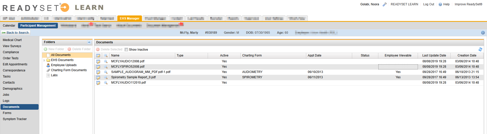
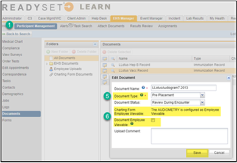
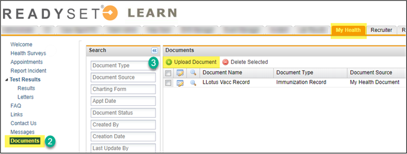

ReadySet enables you to attach documents from several locations, including the Participant Record Documents folder and the paperclip icon in a charting form. Participants are able to upload documents from their My Health Portal.
EHS Manager Document Management
Managers can view all participant-specific attachments from one location within the participant record.
How EHS Managers use Document Management
EHS Managers can view and manage participant documents from the Documents view of the participant record. To view and manage documents:
Go to Participant Management, open a participant record.
Choose Documents in the left menu. The default view, All Documents, opens. This is a view only. The Employee Viewable column indicates if viewable.
Select any of the following document folders:
EHS Documents - This displays any folders previously created, or you can create new folders. These documents are non-viewable by the employee unless noted as viewable.
Employee Uploads – These are documents uploaded by the employee. These uploads are employee-viewable.
Charting Form Documents – These are documents that have been attached to a charting form.
If the charting form is an employee-viewable form, then the employee will be able to view the attachment in their My Health (e.g. Hepatitis B Immunization form).
If the charting form is non-viewable by the employee, then the employee will not be able to view the attachment (e.g. Toxicology form).

Managing Employee Document Uploads
EHS Managers can manage documents uploaded by the participant from the participant record. To view employee uploaded documents, do the following:
Go to Participant record, click Documents.
Click Employee Uploads.
Click the View icon to view the attached document.
Select the Document Type. The drop-down list is editable under Client Admin > Preferences > Document – Types options.
Click the Edit icon.
Select the Document Employee Viewable option to make a document viewable in the employee’s My Health portal.

How participants manage documents
Participants can upload and manage their documents in their My Health ReadySet account.
As a participant, log in to your My Health Account. Have the document or picture of the document available on your device.
Choose Documents in the left menu.
Click Upload Document.

Click Browse to search for your document or drag and drop the document into the upload window.
Select the Document Type.
Enter a descriptive name for the file (e.g. Sam’s Immunization Record).
Optionally, enter an Upload Comment.
Click Upload.
Once a document is uploaded, you can do any of the following:
To delete a document, select the checkbox next to the document and click Delete Selected.
To view the document, click the View icon.
To view document details, click the Edit icon. Document details cannot be edited.

 icon.
icon. icon. Document details cannot be edited.
icon. Document details cannot be edited.